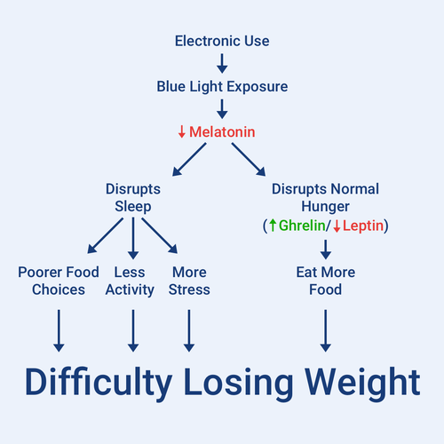

My personal notes for Noom
Caloric Density
Foods with low caloric density (like grapes) fill you up quicker with fewer calories than foods with high caloric density (like raisins). So unless you enjoy an angry stomach, it's a good idea to eat more foods with a low caloric density.
Foods with a high caloric density aren’t necessarily bad for you. For example, almonds are a high-density food but are still good for you. The difference is high-density foods won’t fill you up as fast.
When it comes to satiation, fiber also fills you up, and as a bonus, it’s good for you. Focus on vegetables, fruits, whole grains, nuts, seeds, and some starchy vegetables.
No foods are off-limits. The goal is moderation, not deprivation. When trying to lose weight, try to lean more on low caloric density foods to feel fuller.
Habits
A habit is something you do automatically without thinking about it. Habits form by repeating a behavior over and over.
There’s an unconscious process that occurs for every habit.
- Trigger: The thing that kicks off the habit. Triggers can be environmental, biological, mental, emotional, or social.
- Thought: This can be rational or irrational.
- Action: The actual behavior performed in response to the thought.
- Consequence: The result of the action. There are four kinds of consequences: physical, physiological, psychological, and emotional.
Social triggers are the most common types of triggers. They can be positive or negative. Negative social triggers come in the flavor of people pushing food on you, people judging your healthy food choices, and other people’s existing habits.
We can’t avoid social triggers, so the best way to handle them is to turn negative social triggers into positive social triggers.
An effective way of building good habits is habit bundling, which is where you combine a new habit with a habit you already have. “Think of your current habit as a support system for your new habit. “
The three most common “it’s time to eat triggers are:
- Food (environmental): Try filling your environment with positive food triggers. These need to be healthy foods that you actually like.
- Emotions (emotional): Instead of eating when you’re feeling strong emotions, replace those behaviors with more healthy coping mechanisms, like meditation or exercise.
- Time (psychological): While eating on a schedule can be a good thing, many of us have created unhealthy schedules routines, such as having a sugary coffee in the morning.
One way to help curb some bad habits is to think of them not as isolated events, but as repeated behavior. What if you repeated that ice cream every day? What would happen if skipping a workout became a habit?
Thought Distortions
From Wikipedia:
A cognitive distortion is an exaggerated or irrational thought pattern.
Some common thought distortions:
- All or nothing thinking: “You classify things as falling into one of two categories.”
- Mind reading: You assume you know what other people are thinking, even when you don’t.
- Unhelpful rules: You adhere to strict rules, even when they won’t help your progress.
- Justification: You link two unrelated ideas to justify a decision.
- Delusional thinking: You convince yourself of something you don’t really believe to justify a decision.
- Exaggerated thinking: You make a situation into something bigger than it is to justify a decision.
- Overgeneralization: Taking a small part of something and using it to paint a larger picture.
To combat overgeneralization, try to change "I've failed" to "I've learned."
Every setback is actually an opportunity to learn.
Every time you have a similar thought distortion, "I’ve failed," "I messed up," "I slipped," "I can't make good choices," your job is to instead identify what this situation taught you (lemons → lemonade).
Overcoming thought distortions isn’t about making perfect choices all the time, or about always being “right”.
Overcoming thought distortions is about embracing personal choice, and learning from mistakes without dwelling on them or feeling guilty. And it’s about recognizing that we don’t have to be perfect, we just have to keep moving forward.
Cravings
In fact, your taste for sweet, salty, and savory foods is acquired over time. While everyone is predisposed to enjoy these foods, you learned to crave donuts, chips, pizza, and pastries.
But here's the good news: anything you can learn, you can unlearn, too.
Cravings are learned. By spending time eating less of these things, you can unlearn these habits. This process takes time.
One of the most effective ways of reducing cravings is to perform a healthy swap. Swap a healthier food for the one you’re craving, like a piece of fruit for something sweet.
If the craving really isn’t going away, satisfy it with a small amount of the food in moderation. It’s okay to do this from time to time.
Pedometer
Research shows walking 10,000 steps per day is associated with reaching and maintaining a healthy weight.
SMART Goals
SMART is a proven goal-setting methodology.
- Specific: Clearly defined and detailed.
- Measurable: Easy to determine whether the goal was accomplished.
- Attainable: Something you can accomplish with hard work.
- Relevant: Aligned with your other goals.
- Time-based: Linked to a time frame.
Motivation
Motivation is not constant. It comes in surges and slips—motivational highs and motivational lows. Don’t get too discouraged by slips, because the surges will come back after.
Reinforcement increases the likelihood of a behavior, and punishment decreases the likelihood of a behavior.
Reinforcement and punishment each come in two flavors.
- Positive reinforcement: Reinforcing a behavior by giving you something.
- Negative reinforcement: Reinforcing a behavior by taking something away.
- Positive punishment: Decreases a behavior by giving you something.
- Negative punishment: Decreases a behavior by taking something away.
One mistake people make when trying to lose weight is focusing only on punishment. Applying positive reinforcement to weight loss is an effective alternative. Try adding delicious foods, recipes, and healthy restaurants.
Also important to motivation is self-efficacy, which is your belief in your ability to act a certain way toward achieving a result. Reflecting on and reinforcing your wins will build your self-efficacy. Think back on your victories and celebrate them.
One thing to consider with motivation is that your attention and energy are limited resources. In order to add something, you also need to take away something. In order to identify what you can take away, it’s helpful to break things down into non-negotiable (the things you want to make space for) and negotiables (the things you could do without).
Think about Maslow’s hierarchy of needs. We think we’d be most motivated by the lowest levels, but studies show we're actually more motivated by the higher levels. When thinking about non-food rewards, try to pick things that will help you build self-esteem and feel good about who you are.
The Elephant and the Rider
Inside that mushy gray matter between your ears are two beings. We like to call them the elephant and the rider. The rider is your rational, analytics site. It’s our self-control. The elephant is our impulsive, irrational, emotional side.
Both sides are important when looking at behavior change. If you try to make a change, but ignore the emotional side, you’re probably not going to be effective.
The best way to tame the elephant is to plan ahead.
- Know how the elephant acts and plan for it.
- Control your environment, so the elephant doesn’t rear up as much.
- Make decisions ahead of time.
To work with the elephant:
- Make sure the goals are realistic. If you stretch too far, your elephant will feel overwhelmed.
- Treat yourself regularly. If you never treat yourself, your emotional side will feel deprived.
- Be nice to your elephant. Acknowledge it, and give it small wins, but don’t let it stop you from executing your plans.
Frustration Tolerence
Frustration tolerance is your ability to handle situations that cause short-term discomfort but have long-term benefits. Your frustration tolerance is a skill that can be developed over time.
The key is to change how you think about your situation. Use an “oh well” statement.
- Acknowledge how you feel in the moment.
- Accept it.
- Persevere.
When you’re feeling frustrated, remember that you’re only frustrated because you’re working so hard towards a goal that’s important to you.
Keystone Habits
A keystone habit is a habit that helps other habits fall into place.
Think of it like the first domino you flick that creates a beautiful cascade. Except in this case, things aren’t falling down, they’re building up.
When it comes to weight loss, Noom recommends seven keystone habits. They’re all backed by psychological research.
- Befriend breakfast: Research shows that having breakfast helps people lose weight. When you eat in the morning, you’re less hungry throughout the day—the hunger hormone gherkin is kept at bay—and you tend to eat less.
- Eat regularly: Eating six meals a day will not increase your metabolic rate. It’s very hard to manipulate your base metabolic rate. However, not eating will unleash the elephant. When you eat regularly, you’re more likely to make healthier food choices, eat at home, control your food portions and feel satisfied. It also helps control your blood sugar, reduces hunger hormones, increases satiety hormones, reduces insulin levels, and helps you burn more calories from fat. Eat 3 or 4 meals per day.
- Control your portions: Put food on a plate rather than eating it out of a bad. Make it a small plate, which helps trick your mind into thinking it’s eating more than it is. This is called the Delboeuf illusion. “Cutting your plate size in half can reduce your food intake by 30%!” Also, make sure to measure your food using a food scale.
- Unprocess your diet: Processing foods strips them of the good stuff, like vitamins and fiber, and injects it with crap like salt and sugar. Cutting out processed food will retrain your brain to be turned off by junk food. Processed food gives you a spike in blood sugar, but is followed by a crash. They also activate the rewards center of your brain, which can lead to addictive-like patterns and behaviors.
- Lose the labels: Don’t think of foods as “good” or “bad.” We tend to categorize foods into buckets, which is called compartmentalization. When you mentally label food like this, you’re marking it as off-limits. Long term, this strategy will backfire because it creates a feeling of deprivation. This is a form of all-or-nothing thinking.
- Ditch the drinks: Specifically, ditch sugary drinks or sugar-sweetened beverages. “SSBs are pretty much devoid of anything that makes you full.” They do however make you hungrier. They also impact your brain’s ability to control your calorie intake. Instead, drink water. For most people, that’s between 8–12 cups per day.
- Eat mindfully: When our minds wander, they take on default behaviors. When it comes to food, that’s eating. Mindful eating is eating with intention and attention. This helps you to slow down, eat fewer calories and make healthier choices. To get there, sit down, slow down and enjoy the meal. Electronics make us eat more. Don’t eat dinner in front of the TV!
Fat vs. Added Sugars
Added sugar is sugar that doesn’t exist in nature. 90% of added sugar in the average diet comes from processed food. Most of the added sugar comes from sugary drinks.
Fat is not the enemy. In fact, fat is essential and your body needs
You can consume healthy fats from unprocessed foods. Things like avocados, fatty fish, whole eggs, nuts, seeds, olives, and natural oils.
When food companies take the fat out of processed foods, they usually replace it in with added sugar or taste additives. They also tend to add unhealthy fats to make the processed food taste less like cardboard. They also sometimes add trans fats, which are terrible for you but taste good.
Ego Depletion
Our self-control or willpower (read: rider) is a limited resource. When we single-task, we sip on our self-control resource from a straw. When we multi-task, we require several straws, but that doesn’t usually work, so we lose the lid and start chugging. Very quickly, our self-control vanishes. That’s ego depletion.
Try to focus on one goal at a time. If you try to do everything at once, it’s too draining.
Eating Scripts
Eating scripts are habits built around eating in different situations or environments.
In these situations, we tend to eat unconsciously out of habit. These situations can be powerful triggers to our habits, and we’re not even aware that they’re there.
To help combat eating scripts:
- Dirty up your diet: As long as you’re within your calorie budget, it’s okay to add a little junk. If you don’t enjoy your meal, you’re more likely to want more after.
- Brush your teeth: This is a great way to signal to your brain that the meal is over. Also, the taste of lingering food can be a trigger to eat more.
- Drink tea: Teas can be a good after-dinner treat, and are low-calorie.
Another thing you can do is to expose yourself to your trigger and repeatedly say no. If you do the opposite and limit your exposure, you’ll build a habit of avoiding discomfort, which will make temptations stronger.
Another variety of eating scripts is norm matching, where we try to match the norm of the situation.
Norm matching triggers the same neural pathways as rewards.
To help combat this, be the first person to order (which helps you set the script) or be the person who decides where you’re going.
Norm matching affects us in three ways:
- The foods we choose to eat. To combat this, order first.
- The way we handle and consume food. To combat this, spend more time on conversation, and try to take smaller bites.
- The quantity of food we eat. Try to choose lower caloric density foods.
Finally, the biggest eating script of all is cleaning your plate. Many people are taught that they have to finish all the food on their plate, even when they’re full. It’s okay to leave food on the plate when you’re satiated.
The Food Chain
- Eating environment
- Personal food system
- Food choice
Your personal food system is made up of a bunch of values and internal thought processes that operationalize environmental influences.
This personal food system, and not your eating environment, is ultimately what determines your food choices. But luckily, you're in control.
Your personal food system is made up of values and strategies. Values are the things you care about. Strategies are tools you can use to make food choices simpler. Strategies help you avoid decision fatigue.
There are seven strategies you can use. All of these strategies help you conserve your energy.
- Focusing on one value: You only focus on one value that’s important to you at a time, such as taste or health.
- Routinization: You create a routine, such as eating oatmeal for breakfast)
- Limitation: You restrict or regulate certain foods, such as only getting one doughnut from Mighty O.
- Elimination: You avoid or exclude certain foods, like cutting out ice cream.
- Addition: You add certain food with your meals, such as ordering a small side salad.
- Substitution: Substitution, you make food swaps, like substituting oranges for dessert.
- Modification: You modify your existing foods, such as removing the skin from chicken breast.
When it comes to our eating environment, there are a few key environmental triggers to consider:
- Having food around, particularly when we’re doing something else, can cause us to eat more.
- If you remove the evidence of your consumption, you tend to eat more.
- Humans rely on external cues instead of internal cues to tell us how much to eat. If we have a bottomless bag of chips, we’re going to eat more than if we place them on a small plate.
Food Decisions
People make an average of 221 food choices a day. To help cut down on some of the overhead, follow these tips:
- Keep healthy foods around at all times.
- Make healthy food convenient, like buying them pre-chopped.
- “Proactively incorporate pleasure into your every day.”
- Plan ahead and test yourself every once in a while.
- Have colorful fruits and veggies in plain sight.
- When you plate your food, make it look nice.
Types of Eating
There are four main types of eating:
- Fuel Eating: Literally eating to give your body the energy it needs.
- Fun Eating: Eating for pleasure.
- Fog Eating: Eating mindlessly without realizing what you're doing.
- Storm Eating: Eating your feelings; you feel like you can't stop, even though you're not hungry.
The goal is fuel eating with a little fun eating sprinkled in.
Hormones
When we talk about brains and foods, we’re really concerned with two sub brains:
- Hunger brain: Integrates signals of true hunger.
- Hedonic brain: Integrates signals of triggers and rewards.
Both of these brains compete for you to take action. Sometimes the hunger brain wins, and other times the hedonic brain wins.
Hunger integrates signals from a lot of hormones. When you lose weight or are stressed, your hormones can get knocked out of whack and make you hungry.
Metabolism
Your "metabolic rate" is the rate at which you burn through energy. Your metabolic rate is often described as your total daily energy expenditure (TDEE) (ie. the total number of calories you burn in a day
Your metabolic rate can be broken down into two components:
- Resting energy expenditure.
- Non-resting energy expenditure.
As you lose weight, your basal metabolic rate will decrease.
On average, people who lose weight burn 300 - 400 fewer calories at their new weight than someone who has always been that weight.
One way to combat this is to build muscle. Lean muscle increases your metabolic rate.
Exercise in general will also help with this.
There’s also evidence that eating more protein can potentially counteract the metabolic slowdown.
When you feed your body fewer calories...
- You lose weight, lowering your total daily energy expenditure (TDEE).
- Your fat cells get smaller, so you produce less leptin, meaning you're less satiated. You also produce less PYY, GLP-1, and CCK hormones when you eat (because less food, duh), meaning your "stop eating" signals are weaker and more delayed.
- Your body makes more ghrelin and ILP-5, stimulating hunger.
- Your body realizes that you are feeding it fewer calories than normal, so it becomes more efficient at using calories (metabolic adaptation).
- As your body becomes more efficient, your TDEE decreases beyond what is expected from weight loss alone (adaptive thermogenesis).
Locus of Control
Capitalize on what you can control, then maximize to make the most of it.
You do have a home (indoor space), a neighborhood (outdoor space), and maybe even a recreation center or group in your area that offers free classes (look into that) where you can move it.
Your ability to be active is in your control. And if you really take an honest look at your resource, you actually have tons of creative ways to move every day.
Four Pillars of Health
- Nutrition: You are what you eat.
- Exercise: You are how you move.
- Sleep: You are how you sleep.
- Stress: You are how you manage your stress.
Exercise
Exercise has a whole slew of health benefits, but weight loss isn’t one of them. It will help improve sleep and decrease stress.
Sleep
When you’re sleep-deprived, it drastically affects your nutrition.
- You feel hungrier
- You eat more food
- You make poorer food choices
Missing sleep also impacts stress levels.
Finally, you’re also less active be use you’re tired.

A pre-sleep routine should have four things:
- A time to unplug
- Preparation for the following day
- A relaxing activity
- A bedtime
Stress
When we’re stressed, our bodies release cortisol. Cortisol also plays a role in regulating:
- Metabolism
- Blood sugar levels
- Inflammation
- Immune responses
Some strategies for dealing with stress:
- “Oh well,” statement: Acknowledge how you feel, accept it and persevere.
- Single-task: Only focus on one task at a time.
- ”Get-out-of-jail” phrase: a pre-planned phrase you can use in stressful situations to say no.
- Mindfulness: Spend more time in the present moment.
- Exercise: It boosts serotonin and reduces cortisol.
Plateaus
Plateaus are no good, but they’re a normal part of the weight loss process. Scientists define a plateau as 14 days of no weight loss.
There are a few ways to break out of a plateau:
- Ride the waves: Don’t freak out about it. Stick to the program, and eventually, the plateau will subside.
- Meet your calorie budget: This means not letting the elephant loose, but also not eating too little.
- Move more: This can help stimulate your metabolism and get things going.
- Find other ways to measure progress: Happiness is not only found on the scale.
- Take a diet break: Research shows this can actually increase leptin and can lead to more success long-term.
Research
When evaluating research, consider F-I-R-S-T.
- Funding: Who funded through study? Did they have a financial interest in the outcome?
- Investigation: Was the study looking at cause and effect or correlation?
- Results: Are the results presented in a trustworthy way? Where were they presented? Studies suggest results, but by themselves don’t prove them.
- Subjects: How big was the study? Was the study performed on animals or people?
- Time: How old is the study? How long did it run? If the study is older, are there newer studies that replicate its findings?
Fat
Our bodies can’t produce essential fatty acids, and only certain vitamins can be absorbed with fat. We also need fat for energy.
Don’t demonize fat.
There are different types of fat:
- Unsaturated fat: This is the “good” fat. It can raise good cholesterol. It’s found in things like olive oil, fish, avocados, and nuts.
- Saturated fat: This is the “okay” fat. It can raise bad cholesterol, but newer studies show it might not be as bad as we thought.
- Trans fat: This is the “bad” fat. It’s linked to heart disease. Don’t eat it.
Fish are also rich in omega-3 fatty acids, which can keep them heart-healthy.
Carbs
People are now demonizing carbs, but they’re not all bad.
- Carbs are energy.
- Carbs are our only source of fiber.
- Healthy carbs are mostly green foods.
Some great carbs to eat are veggies, fruits, and whole grains.
Processed carbs like sugary sweets, white bread, cereals, and juice can flip all those good things that the green carbs do on their head, putting us at risk for heart disease, and leaving us feeling sluggish and craving more.
Stress Eating
For many people, feeling stress triggers a craving to eat. Why? Eating causes a rush of dopamine (think: pleasure) in your brain (especially when it’s deliciously sugary, salty, or greasy food).
Simply put, eating when your mood is low is a learned behavior. You can learn new behaviors. Noom recommends doing this in a few different ways, depending on the strength of the urge.
Low Craving: Urge Surfing
Metaphorically ride the wave of your emotion and urge without trying to change them.
When your craving isn’t too strong, it’s a great opportunity to practice sitting with your feelings and simply breathing, to build your “say no” muscles.
Medium Craving: Seek Dopamine
An alternative dose of dopamine can do the trick. Noom recommends a few different things:
- Play with your dog
- Listen to a favorite song or musician
- Step outside in the sunshine
- Hug a loved one
- What something funny
High Craving: Distraction
Studies show that distraction is a really good tool when emotions are high. And when your emotions come back down, that’s the time to feel your feelings and process your experience.
Noom recommends doing this for 5–10 minutes, not for hours at a time. Here are some recommendations:
- Play a game
- Journal
- Doodle or draw
- Knit, crochet or sew
- Listen to music
- Read a chapter of a book
Forgiveness
Stress eating will happen.
You’re going to eat because you’re overwhelmed. You’re going to eat because you’re sad. You’re going to eat because you’re scared. You’re doing to eat because you’re a human learning to navigate this new (temporary normal).
The best thing that you can do for yourself is to acknowledge it, forgive yourself, and “recover” normally. If you try to overcompensate, it’ll usually backfire.
Nutrition
Eat real food. Not too much. Mostly vegetables. —Michael Pollan
According to Noom, the science can vary and change over time. However, eating veggies and fruits, sticking to whole, unprocessed foods, and not overeating aren’t going anywhere.
It doesn’t have to be complicated. Use common sense.
Dialectical Behavioral Therapy
Dialectical Behavioral Therapy (DBT) is another style of therapy.
DBT focuses on teaching skills and strategies to be mindful, manage emotions, maintain healthy relationships, and tolerate stress.
DBT differentiates between willfulness and willingness.
- Willfulness: “Being stubborn and inflexible about getting what you want and need. It means you don’t care about what is possible, and you try to bend reality to your will. Think of it like fist-fighting the universe.”
- Willingness: Accepting where you are, what it's going to take for you to change, and taking all that life throws at you as an active participant to pursue your goals.
Ready = willing = able
Stress
IMPROVE is a dialectical behavioral therapy (DBT) for dealing with stressful situations.
- Imagery: Imagine the outcome you want in this situation.
- Meaning: Try to find meaning in the situation. “What lessons can I take away from this?”
- Practice: Do something that fills you with a sense of purpose.
- Relax: Do something that calms you down.
- One thing (in the moment): Bring yourself to the present moment by connecting yourself to one thing happening now.
- Vacation: Take a break from the situation you’re struggling with.
- Encouragement: Br your own cheerleader. Leave yourself some notes.
Autonomic Nervous System (ANS)
The autonomic nervous system is composed of two parts:
- First is the Sympathetic Nervous System, which is the “gas pedal”. It preps your body for activity (“fight or flight”). If it senses danger (stressor) it starts pumping adrenaline, pumping your heart faster, opening your airways, and releasing sugar into your bloodstream.
- Next, the Parasympathetic Nervous System kicks in and hits the “breaks”. It slows your body down, letting you “rest and digest”. The problem is if we’re always stressed, the parasympathetic nervous system never gets to engage—we’re always in full SNS mode.
Mindfulness
Another strategy for dealing with stress is mindfulness.
Simple meditation practices impact the sympathetic nervous system (flight or fight) by interrupting the activity along the stress response pathways.
Short term, meditation has a lot of benefits.
- Interrupts the output of stress hormones such as cortisol
- Decreases anxiety
- Calms mind
- Improves focus
- Lowers heart rate
- Can lower blood pressure
- Increases blood flow to the brain
- Increases sense of well-being
- Improves mood
Long term, there are many benefits as well.
- Lowers risk of cardiovascular disease
- Strengthens immune system
- Increases development of new neural pathways that support positive thinking and healthy behavior
- Decreases rates of pre-existing cardiovascular disease
- Improves digestion
- Improves focus
- Increases energy
- Decreases reactivity
- Increases ability to choose helpful thoughts and release critical ones.
It’s in our nature to strive for the positive while seeking to avoid negative emotions (think stress, denial, fear of missing out). It’s the reason why it’s easier to give in to that ice cream sundae (momentary positive), even though it’s not in line with your big picture (but that’s the future you’s problem).
The problem is that emotions are short-lived, and that fleeting positive feeling from the ice cream quickly turns negative when we realize we’ve strayed from our plan. These negative feelings can once again lead us to search out a temporary positive, as we start searching for another mental ice cream sundae.
Affirmations
Thoughts shape your experiences. Since your thoughts are like lenses that color or influence your perception, positive and supportive thinking (aka choosing positive thoughts) can create a positive and supported outcome.
Studies have shown that the act of choosing positive thoughts (affirmations) has a direct effect on your nervous system, your day-to-day experiences, the choices you make, the interactions you have with others, and your outlook on life.
One way to think about affirmations is that they’re the opposite of thought distortions.
Affirmations have a lot of benefits backed by science:
- They help us to react better and deal with threats and things that are out of our control.
- They help us perform better.
- They help us make fewer errors (slips).
- They help us better cope when we do make mistakes.
Microbiome
Your microbiome is a collection of millions of bacteria that are living, right this moment, in your gut.
Your microbiome is so powerful, it’s been called our body’s second brain.
Your microbiome has a whole host of functions:
- Impacting your immune system
- Improving your memory
- Protecting your body
- Improving digestion and elimination
- Aiding nutrient absorption
- Increasing energy
The most impactful way you can keep your microbiome in good order is by eating a healthy diet. One of the best ways to help your microbiome is to eat fermented foods. Some palatable options are:
- Kimchi
- Yogurt
- Miso
- Sourdough bread
- Tempeh
- Kombucha
Triggers
There are four main types of triggers:
- People: Sometimes other people can put pressure on us to eat more or unhealthy food.
- Places: Our environments can trigger us.
- Things: Items (especially food) can trigger us to want to eat them.
- Emotions: We eat to celebrate things and we eat to feel better.
We can attack triggers with the DEADS method:
- Delay: Studies show that waiting even 10 minutes will curb most cravings, and 90% are gone after just 30 minutes.
- Escape: Remove yourself from the source of your craving.
- Accept: “You’re not weak if you have a craving, you’re normal because cravings are normal.”
- Dispute: “Notice when and where your cravings tend to occur, so you can come up with strategies to tackle those triggers where they live or even avoid them in the first place!”
- Substitute: Try to do something fun or healthy to counteract your cravings.